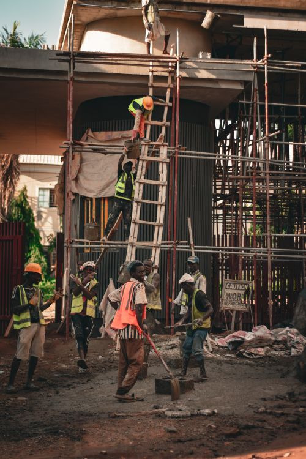
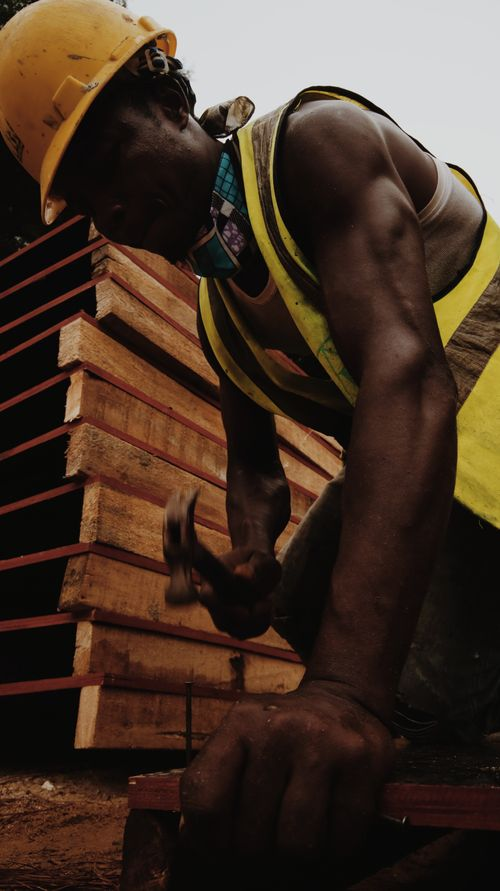

Project location
Tell us where the work will take place and whether the site is accessible for an initial visit.
A useful quotation starts with useful information. Send the project basics below and outline what you already know. The form is a front-end enquiry form for this local prototype and does not send email yet.
The more context you can share, the more useful the first response can be. If you have drawings, a bill of quantities or a site brief, mention them in your message so the next conversation can be focused.
Tell us where the work will take place and whether the site is accessible for an initial visit.
Describe the building, civil works, renovation or coordination support you need.
Share any target dates, key constraints or priorities such as durability, speed or phased delivery.





Use the form for a building, civil engineering, renovation or site preparation enquiry. If you prefer a direct conversation, contact the team using the details on the Contact page.